APIs prontas de modelos (LLM grátis, roteamento).
| Vídeo | Projeto | O que faz | Pasta de origem | |
|---|---|---|---|---|
| Transforme QUALQUER site em uma API com esta IA | 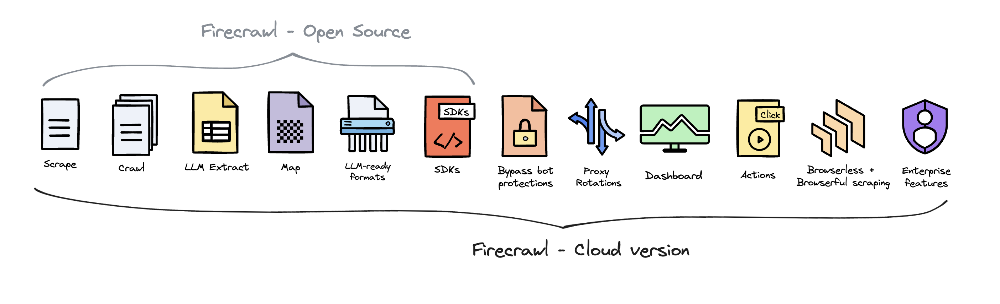 | firecrawl/firecrawl | 201k★ · qualquer site vira conteúdo limpo pra IA (crawl + MCP). | curado — busca na internet |
| Markdown - O que é e Como Funciona? | 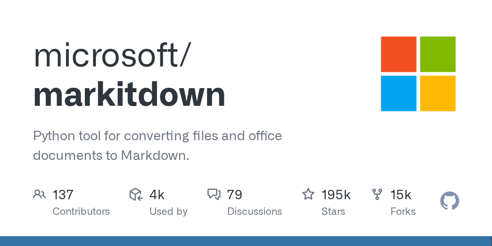 | microsoft/markitdown | 195k★ · PDF, Word, Excel e PowerPoint viram texto limpo pra IA. | curado — busca na internet |
| O Browser Use Está Revolucionando A Automação Na | 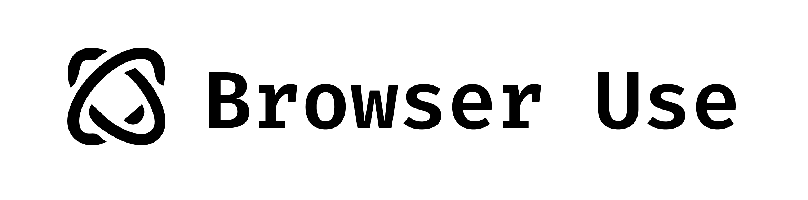 | browser-use/browser-use | 120k★ · agente que clica, preenche e pesquisa no navegador. | curado — busca na internet |
| NÃO ESPERE! Aprenda a Criar Seu Próprio Servidor | 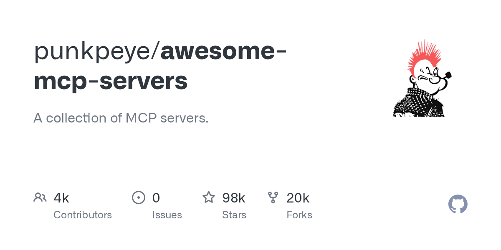 | punkpeye/awesome-mcp-servers | 97k★ · catálogo gigante de servidores MCP. | curado — busca na internet |
| Over 200,000 Servers in One Place! Visiting Hetz | 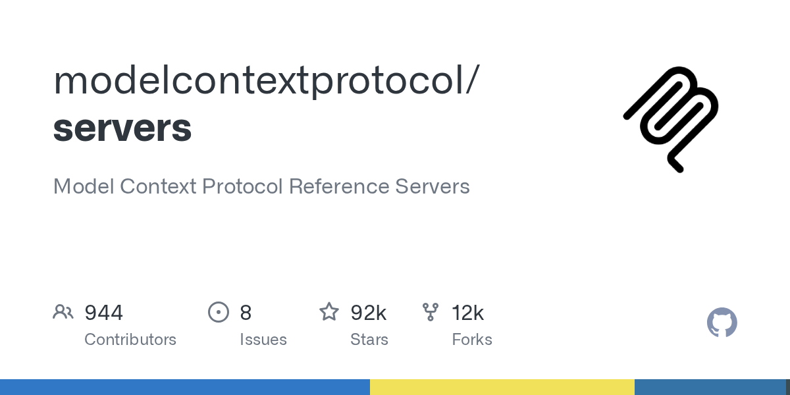 | modelcontextprotocol/servers | 91k★ · servidores MCP de referência (oficial). | curado — busca na internet |
| Installing Private GPT to interact with your own | 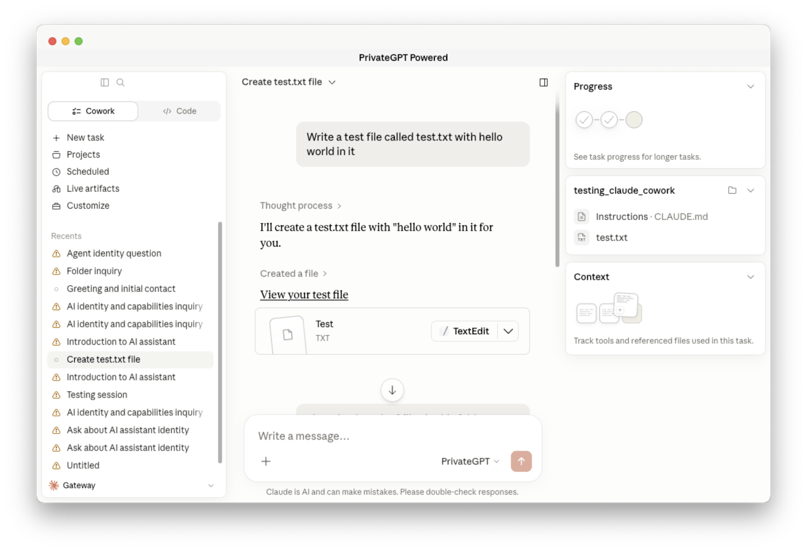 | zylon-ai/private-gpt | 57k★ · API completa de IA privada em cima de modelos locais. | curado — busca na internet |
| Playwright - Automatize qualquer tarefa na inter | 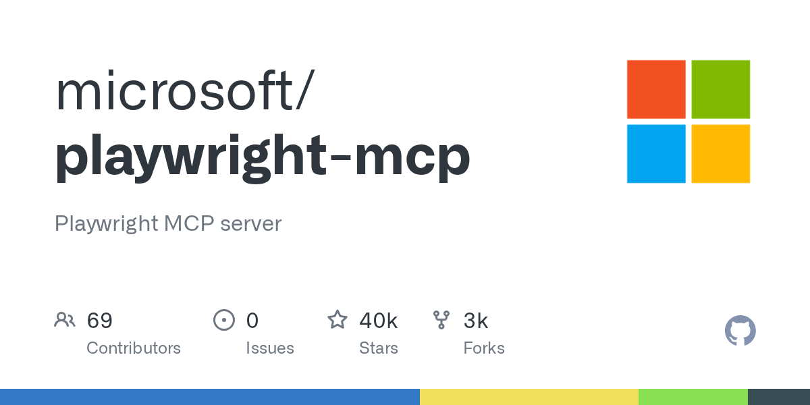 | microsoft/playwright-mcp | 39k★ · MCP oficial do Playwright (automação de navegador). | curado — busca na internet |
| NÃO ESPERE! Aprenda a Criar Seu Próprio Servidor | 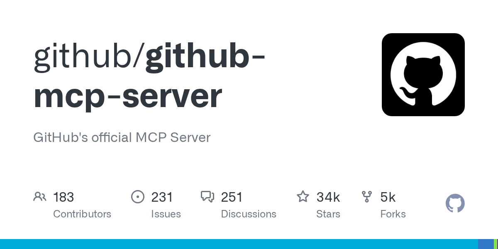 | github/github-mcp-server | 34k★ · MCP oficial do GitHub (repos, issues, PRs). | curado — busca na internet |
| VEJA COMO É FÁCIL CRIAR UM SERVIDOR MCP! - FastM | PrefectHQ/fastmcp | 28k★ · jeito rápido de criar servidor/cliente MCP em Python. | curado — busca na internet | |
| Tutorial Activepieces | Como criar Automação com | 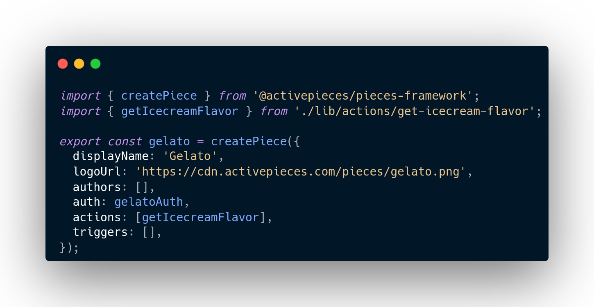 | activepieces/activepieces | 25k★ · automação com ~400 MCPs prontos. | curado — busca na internet |
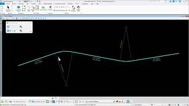 01 Civil Python SDK and Editor | 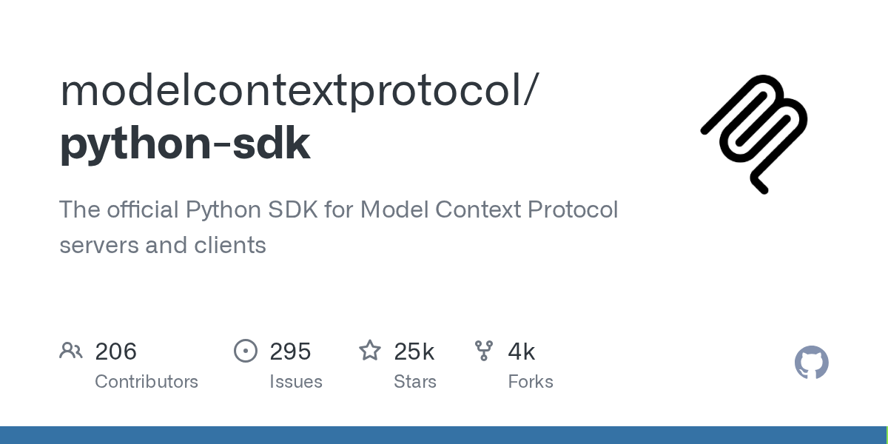 | modelcontextprotocol/python-sdk | 24k★ · SDK oficial de MCP para Python. | curado — busca na internet |
| MCP - Guia Definitivo para Iniciantes (EXEMPLOS | 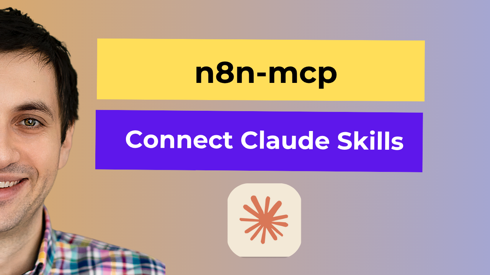 | czlonkowski/n8n-mcp | 23k★ · MCP que deixa a IA montar/editar fluxos do n8n. | curado — busca na internet |
| FreeLLMAPI: configure IAs grátis no OpenCode do | 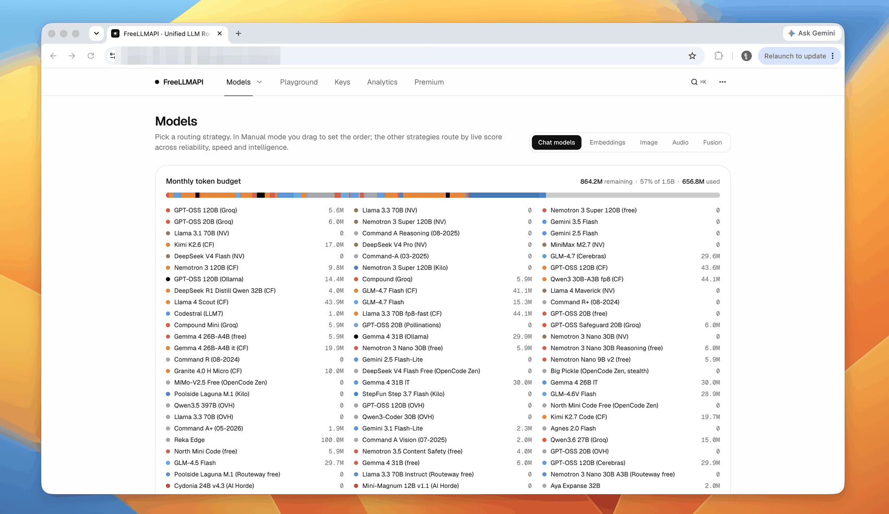 | tashfeenahmed/freellmapi | 34 provedores de LLM grátis e 635 endpoints numa API só. | PROGRAMAÇÂO IA AGENT / GITHUBS / VARIADOS |
| Como programar de forma intuitiva usando DeepSee | 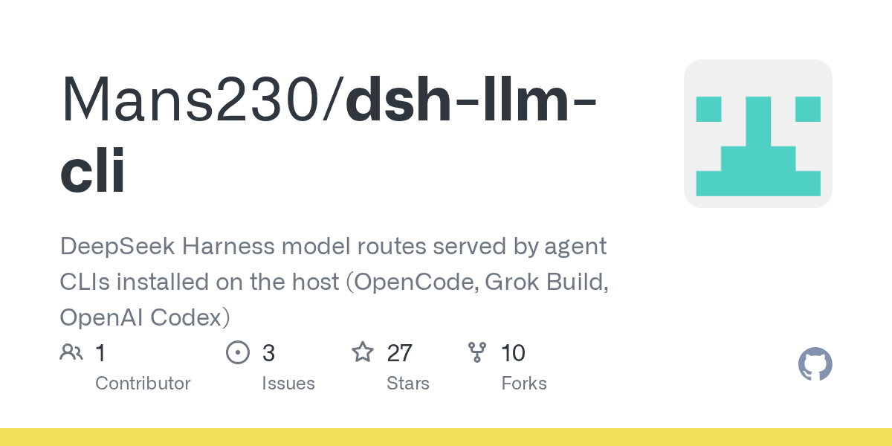 | Mans230/dsh-llm-cli | Roteia modelos DeepSeek pelas CLIs de agente instaladas na máquina. | PROGRAMAÇÂO IA AGENT / GITHUBS / VARIADOS |